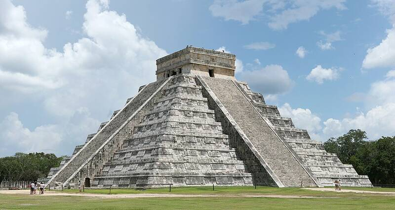

Chichén Itzá
Yucatán, Mexico, about AD 600 to 1200

A Maya city whose stepped pyramid, El Castillo, casts a serpent-shaped shadow down its stairs at the spring and fall equinoxes. 1
Open in the interactive Watcher
Sources
- Chichen Itza Wikipedia